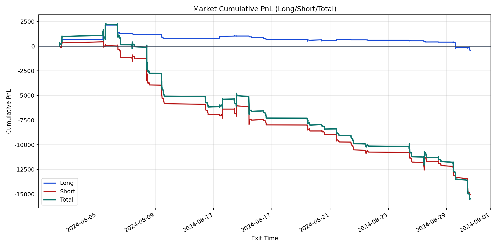
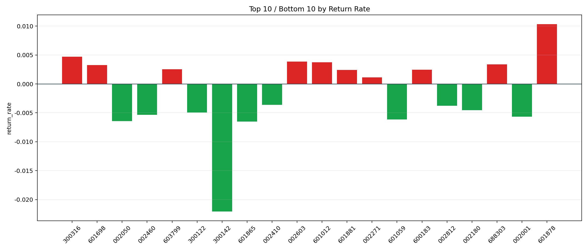

| repo_root | /home/haoranyou/data/output/alpha0.4_1w_5s_3ticks_index_filter/index_weights_300 |
|---|---|
| period_months | 1 |
| period_label | 2024-08-02_to_2024-08-30 |
| start_time | 2024-08-02 10:00:17 |
| end_time | 2024-08-30 14:45:02 |
| n_trades | 1461 |
| n_symbols | 56 |
| total_pnl | -15449.748950000017 |
| long_total_pnl | -431.0575500000143 |
| short_total_pnl | -15018.691399999998 |
| total_entry_notional | 13649020.0 |
| long_entry_notional | 1871705.0 |
| short_entry_notional | 11777315.0 |
| total_return_rate | -0.0011319310067682527 |
| long_return_rate | -0.00023030207751756517 |
| short_return_rate | -0.0012752220179217417 |
| top_symbols_by_return | ["601878", "300316", "002603", "601012", "688303", "601698", "603799", "600183", "601881", "002271"] |
| bottom_symbols_by_return | ["300142", "601865", "002050", "601059", "002001", "002460", "300122", "002180", "002812", "002410"] |

